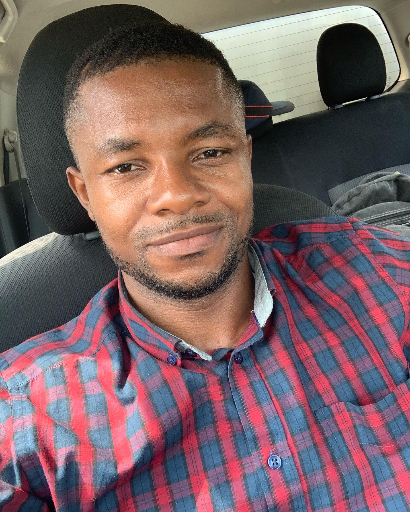

Edwin Mbong Mbong | WDD 130
I am Edwin Mbong Mbong from Akwa Ibom State Nigeria. I am the oldest of 5 siblings. I was born and raised in The Church of Jesus Christ of Latter-Day Saints. I served my mission in Cape Coast, Ghana between 2010 and 2012. I am currently serving as a member of the Bishopric in my ward. I Have a high interest in web development and software Engineering which is why I am taking this course with BYUI. I am hopeful of becoming a successful software Engineer soon.